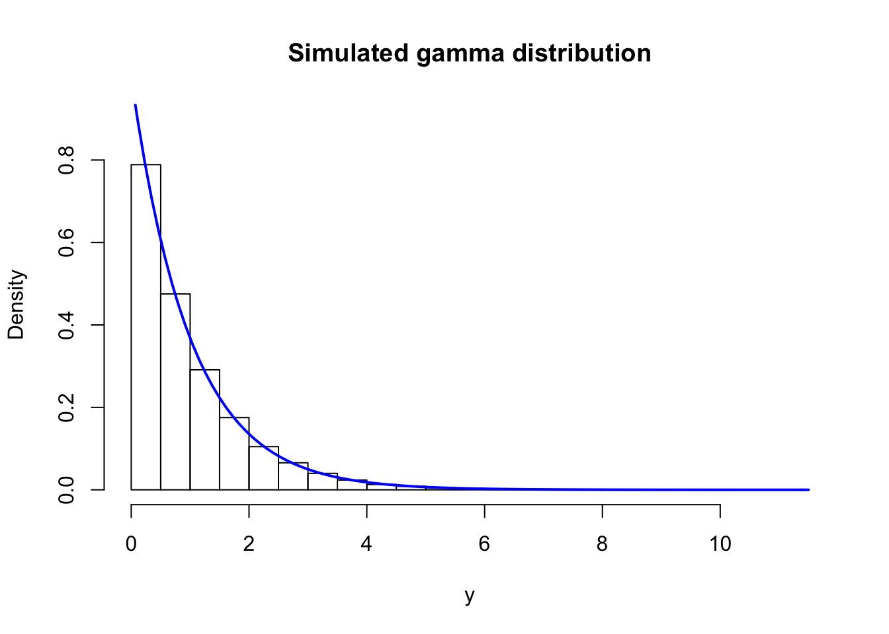

4.3 Rejection sampling
This section deals with a general algorithm for simulating variables from a distribution with density \(f\). We call \(f\) the target density and the corresponding distribution is called the target distribution. The idea is to simulate proposals from a different distribution with density \(g\) (the proposal distribution) and then according to a criterion decide to accept or reject the proposals. It is assumed throughout that the proposal density \(g\) is a density fulfilling that
\[\begin{equation} g(x) = 0 \Rightarrow f(x) = 0. \tag{4.1} \end{equation}\]Let \(Y_1, Y_2, \ldots\) be i.i.d. with density \(g\) on \(\mathbb{R}\) and \(U_1, U_2, \ldots\) be i.i.d. uniformly distributed on \((0,1)\) and independent of the \(Y_i\)s. Define \[T(\mathbf{Y}, \mathbf{U}) = Y_{\sigma}\] with \[\sigma = \inf\{n \geq 1 \mid U_n \leq \alpha f(Y_n) / g(Y_n)\},\] for \(\alpha \in (0, 1]\) and \(f\) a density. Rejection sampling then consists of simulating independent pairs \((Y_n, U_n)\) as long as we reject the proposals \(Y_n\) sampled from \(g\), that is, as long as \[U_n > \alpha f(Y_n) / g(Y_n).\] The first time we accept a proposal is \(\sigma\), and then we stop the sampling and return the proposal \(Y_{\sigma}\). The result is, indeed, a sample from the distribution with density \(f\) as the following theorem states.
Theorem 4.2 If \(\alpha f(y) \leq g(y)\) for all \(y \in \mathbb{R}\) and \(\alpha > 0\) then the distribution of \(Y_{\sigma}\) has density \(f\).
Proof. Note that \(g\) automatically fulfills (4.1). The formal proof decomposes the event \((Y_{\sigma} \leq y)\) according to the value of \(\sigma\) as follows
\[\begin{align} P(Y_{\sigma} \leq y) & = \sum_{n = 1}^{\infty} P(Y_{n} \leq y, \ \sigma = n) \\ & = \sum_{n = 1}^{\infty} P(Y_{n} \leq y, \ U_n \leq \alpha f(Y_n) / g(Y_n)) P(\sigma > n - 1) \\ & = P(Y_{1} \leq y, \ U_1 \leq \alpha f(Y_1) / g(Y_1)) \sum_{n = 1}^{\infty} P(\sigma > n - 1). \end{align}\]By independence of the pairs \((Y_n, U_n)\) we find that \[P(\sigma > n - 1) = p^{(n-1)}\] where \(p = P(U_1 > \alpha f(Y_1) / g(Y_1))\), and \[\sum_{n = 1}^{\infty} P(\sigma > n - 1) = \sum_{n = 1}^{\infty} p^{(n-1)} = \frac{1}{1 - p}.\]
We further find using Tonelli’s theorem that
\[\begin{align} P(Y_{1} \leq y, \ U_1 \leq \alpha f(Y_1) / g(Y_1)) & = \int_{-\infty}^y \alpha \frac{f(z)}{g(z)} g(z) \mathrm{d}z \\ & = \alpha \int_{-\infty}^y f(z) \mathrm{d} z. \end{align}\]It also follows from this, by taking \(y = \infty\), that \(1 - p = \alpha\), and we conclude that \[P(Y_{\sigma} \leq y) = \int_{-\infty}^y f(z) \mathrm{d} z,\] and the density for the distribution of \(Y_{\sigma}\) is, indeed, \(f\).
Note that if \(\alpha f \leq g\) for densities \(f\) and \(g\), then \[\alpha = \int \alpha f(x) \mathrm{d}x \leq \int g(x) \mathrm{d}x = 1,\] whence it follows automatically that \(\alpha \leq 1\) whenever \(\alpha f\) is dominated by \(g\). The function \(g/\alpha\) is called the envelope of \(f\). The tighter the envelope, the smaller is the probability of rejecting a sample from \(g\), and this is quantified explicitly by \(\alpha\) as \(1 - \alpha\) is the rejection probability. Thus \(\alpha\) should preferably be as close to one as possible.
If \(f(y) = c q(y)\) and \(g(y) = d p(y)\) for (unknown) normalizing constants \(c, d > 0\) and \(\alpha' q \leq p\) for \(\alpha' > 0\) then \[\underbrace{\left(\frac{\alpha' d}{c}\right)}_{= \alpha} \ f \leq g.\] The constant \(\alpha'\) may be larger than 1, but from the argument above we know that \(\alpha \leq 1\), and Theorem 4.2 gives that \(Y_{\sigma}\) has distribution with density \(f\). It appears that we need to compute the normalizing constants to implement rejection sampling. However, observe that \[u \leq \frac{\alpha f(y)}{g(y)} \Leftrightarrow u \leq \frac{\alpha' q(y)}{p(y)},\] whence rejection sampling can actually be implemented with knowledge of the unnormalized densities and \(\alpha'\) only and without computing \(c\) or \(d\). This is one great advantage of rejection sampling, though we should note that when we don’t know the normalizing constants, \(\alpha'\) does not tell us anything about how tight the envelope is, and thus how small the rejection probability is.
Given two functions \(q\) and \(p\), how do we then find \(\alpha'\) so that \(\alpha' q \leq p\)? Consider the function \[y \mapsto \frac{p(y)}{q(y)}\] for \(q(y) > 0\). If this function is lower bounded by a value strictly larger than zero, we can take \[\alpha' = \inf_{y: q(y) > 0} \frac{p(y)}{q(y)} > 0.\] We can in practice often find this value by minimizing \(p(y)/q(y)\). If the minimum is zero, there is no \(\alpha'\), and \(p\) cannot be used to construct an envelope. If the minimum is strictly positive it is the best possible choice of \(\alpha'\).
4.3.1 von Mises distribution
Recall the von Mises distribution from Section 1.2.1. It is a distribution on \((-\pi, \pi]\) with density \[f(x) \propto e^{\kappa \cos(x - \mu)}\] for parameters \(\kappa > 0\) and \(\mu \in (-\pi, \pi]\). Clearly, \(\mu\) is a location parameter, and we fix \(\mu = 0\) in the following. Simulating random variables with \(\mu \neq 0\) can be achieved by (wrapped) translation of variables with \(\mu = 0\).
Thus the target density is \(f(x) \propto e^{\kappa \cos(x)}\). In this section we will use the uniform distribution on \((-\pi, \pi)\) as proposal distribution. It has constant density \(g(x) = (2\pi)^{-1}\), but all we need is, in fact, that \(g(x) \propto 1\). Since \(x \mapsto 1 / \exp(\kappa \cos(x)) = \exp(-\kappa \cos(x))\) attains its minimum \(\exp(-\kappa)\) for \(x = 0\), we find that \[\alpha' e^{\kappa \cos(x)} = e^{\kappa(\cos(x) - 1)} \leq 1,\] with \(\alpha' = \exp(-\kappa)\). The rejection test of the proposal \(Y \sim g\) can therefore be carried out by testing if a uniformly distributed random variable \(U\) on \((0,1)\) satisfies \[U > e^{\kappa(\cos(Y) - 1)}.\]
vMsim <- function(n, kappa) {
y <- numeric(n)
for(i in 1:n) {
ratio <- 0
u <- 1
while(u > ratio) {
y0 <- runif(1, - pi, pi)
ratio <- exp(kappa * (cos(y0) - 1))
u <- runif(1)
}
y[i] <- y0
}
y
}f <- function(x, k) exp(k * cos(x)) / (2 * pi * besselI(k, 0))
x <- vMsim(100000, 0.5)
hist(x, breaks = seq(-pi, pi, length.out = 20), prob = TRUE)
curve(f(x, 0.5), -pi, pi, col = "blue", lwd = 2, add = TRUE)
x <- vMsim(100000, 2)
hist(x, breaks = seq(-pi, pi, length.out = 20), prob = TRUE)
curve(f(x, 2), -pi, pi, col = "blue", lwd = 2, add = TRUE)

Figure 4.1: Histograms of 100000 simulated data points from von Mises distributions with parameters \(\kappa = 0.5\) (left) and \(\kappa = 2\) (right). The true densities (blue) are added to the plots.
Figure 4.1 confirms that the implementation simulates from the von Mises distribution.
system.time(vMsim(100000, kappa = 5))## user system elapsed
## 2.271 0.396 2.680Though the implementation can easily simulate 100000 variables in a couple of seconds, it might still be possible to improve it. To investigate what most of the run time is spent on we use the line profiling tool as implemented in the profvis package.
library(profvis)
profvis(vMsim(10000, 5))
The profiling result shows that almost all the time is spent on simulating uniformly distributed random variables. It is, perhaps, expected that this should take some time, but that it takes so much more time than computing the ratio, say, used for the rejection test is a bit surprising. What might be even more surprising is the large amount of memory allocation and deallocation associated with the simulation of the variables.
The culprit is runif that has some overhead associated with each call. The function performs much better if called once to return a vector than if called repeatedly as above to return just single numbers. We can rewrite the rejection sampler to make better use of runif, but it does make the function a bit more complicated because we don’t know upfront how many uniform variables we need. For later usage we add the possibility of printing out some tracing information.
vMsim <- function(n, kappa, trace = FALSE) {
m <- n
fact <- 1
count <- 0
j <- 1
y <- numeric(n)
y0 <- runif(m, - pi, pi)
u <- runif(m)
for(i in 1:n) {
repeat {
z <- y0[j]
accept <- u[j] <= exp(kappa * (cos(z) - 1))
j <- j + 1
count <- count + 1
if(j > m) {
if(fact == 1) fact <- n / i
m <- floor(fact * (n - i + 1))
y0 <- runif(m, - pi, pi)
u <- runif(m)
j <- 1
}
if(accept) break
}
y[i] <- z
}
if(trace)
cat("kappa =", kappa, ":", (count - n)/ count, "\n") ## Rejection frequency
y
}The implementation above generates new vectors of uniform random variables whenever it “runs out”. The first time it needs to do so it estimates a factor of how many variables is needed per accept, and then it generates the estimated number of variables needed. This may be repeated a couple of times.
system.time(vMsim(100000, kappa = 5))## user system elapsed
## 0.193 0.004 0.197As we see from the time estimate above, using a vectorized call of runif reduces the run time by more than a factor 10.
We should, of course, remember to test that the new implementation still generates variables from the von Mises distribution.
x <- vMsim(100000, 0.5)
hist(x, breaks = seq(-pi, pi, length.out = 20), prob = TRUE)
curve(f(x, 0.5), -pi, pi, col = "blue", lwd = 2, add = TRUE)
x <- vMsim(100000, 2)
hist(x, breaks = seq(-pi, pi, length.out = 20), prob = TRUE)
curve(f(x, 2), -pi, pi, col = "blue", lwd = 2, add = TRUE)

Figure 4.2: Histograms of 100000 simulated data points from von Mises distributions with parameters \(\kappa = 0.5\) (left) and \(\kappa = 2\) (right), simulated using the fast implementation.
4.3.2 Gamma distribution
It may be possible to find a suitable envelope of the density for the gamma distribution on \((0, \infty)\), but it turns out that there is a very efficient rejection sampler of a non-standard distribution that can be transformed into a gamma distribution by a simple transformation.
Let \(t(y) = a(1 + by)^3\) for \(y \in (-b^{-1}, \infty)\), then \(t(Y) \sim \Gamma(r,1)\) if \(r \geq 1\) and \(Y\) has density \[f(y) \propto t(y)^{r-1}t'(y) e^{-t(y)} = e^{(r-1)\log t(y) + \log t'(y) - t(y)}.\]
[Proof: Use univariate density transformation theorem.]
The density \(f\) will be the target density for a rejection sampler.
With \[f(y) \propto e^{(r-1)\log t(y) + \log t'(y) - t(y)},\] \(a = r - 1/3\) and \(b = 1/(3 \sqrt{a})\) \[f(y) \propto e^{a \log t(y)/a - t(y) + a \log a} \propto \underbrace{e^{a \log t(y)/a - t(y) + a}}_{q(y)}.\]
An analysis of \(w(y) := - y^2/2 - \log q(y)\) shows that it is convex on \((-b^{-1}, \infty)\) and it attains its minimum in \(0\) with \(w(0) = 0\), whence \[q(y) \leq e^{-y^2/2}.\] This gives us an envelope expressed in terms of unnormalized densities with \(\alpha' = 1\).
The implementation of a rejection sampler based on this analysis is relatively straightforward. The rejection sampler will simulate from the distribution with density \(f\) by simulating from the Gaussian distribution (the envelope). For the rejection step we need to implement \(q\). Finally, we also need to implement \(t\) to transform the result from the rejection sampler to be gamma distributed. The rejection sampler is otherwise implemented as for the von Mises distribution. To investigate rejection probabilities below we additionally implement the possibility of printing out some tracing information.
## r >= 1
tfun <- function(y, a) {
b <- 1 / (3 * sqrt(a))
(y > -1/b) * a * (1 + b * y)^3 ## 0 when y <= -1/b
}
qfun <- function(y, r) {
a <- r - 1/3
tval <- tfun(y, a)
exp(a * log(tval / a) - tval + a)
}
gammasim <- function(n, r, trace = FALSE) {
m <- n
fact <- 1
count <- 0
j <- 1
y <- numeric(n)
y0 <- rnorm(m)
u <- runif(m)
for(i in 1:n) {
repeat {
z <- y0[j]
accept <- u[j] <= qfun(z, r) * exp(z^2/2)
j <- j + 1
count <- count + 1
if(j > m) {
if(fact == 1) fact <- n / i
m <- floor(fact * (n - i + 1))
y0 <- rnorm(m)
u <- runif(m)
j <- 1
}
if(accept) break
}
y[i] <- z
}
if(trace)
cat("r =", r, ":", (count - n)/ count, "\n") ## Rejection frequency
tfun(y, r - 1/3)
}We test the implementation by simulating 100000 values with parameters \(r = 8\) as well as \(r = 1\) and compare the resulting histograms to the respective theoretical densities.
system.time(y <- gammasim(100000, 8))## user system elapsed
## 0.202 0.018 0.222
system.time(y <- gammasim(100000, 1))## user system elapsed
## 0.174 0.001 0.175
Though this is only a simple and informal test, it indicates that the implementation correctly simulates from the gamma distribution.
Rejection sampling can be computationally expensive if many samples are rejected. A very tight envelope will lead to fewer rejections, while a loose envelope will lead to many rejections. Using the tracing option as implemented we obtain estimates of the rejection probability and thus a quantification of how tight the envelope is.
y <- gammasim(100000, 16, trace = TRUE)
y <- gammasim(100000, 8, trace = TRUE)
y <- gammasim(100000, 4, trace = TRUE)
y <- gammasim(100000, 1, trace = TRUE)## r = 16 : 0.002105557
## r = 8 : 0.003507653
## r = 4 : 0.008133307
## r = 1 : 0.04815389We observe that the rejection frequencies are small with \(r = 1\) being the worst case with around 5% rejections. For the other cases the rejection frequencies are all below 1%, thus rejection is rare.
A visual comparison of \(q\) to the (unnormalized) Gaussian density also shows that the two (unnormalized) densities are very close except in the tails where there is very little probability mass.

Figure 4.3: Comparisons of the Gaussian proposal (red) and the target density (blue) used for eventually simulating gamma distributed variables via a transformation.